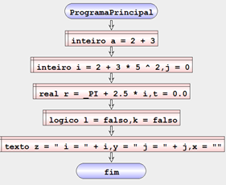

Exemplo – Definir variáveis
Algoritmo que mostra as a definição de variáveis dos tipos presentes no Algorithmi.
| Fluxograma pt-PT | Pseudocódigo pt-PT |
|---|---|
|  | inicio ProgramaPrincipal inteiro a = 2 + 3 definir inteiro i = 2 + 3 * 5 ^ 2, j definir real r = _PI + 2.5 * i, t definir logico l = falso, k definir texto z = " i = " + i, y = " j = " + j, x fim ProgramaPrincipal |
Resultado: